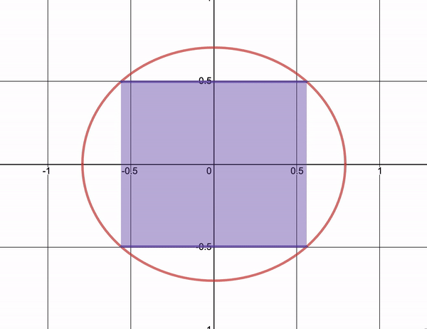
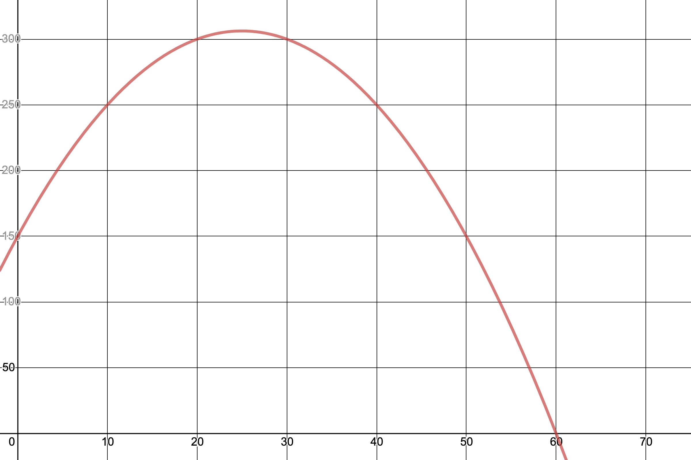
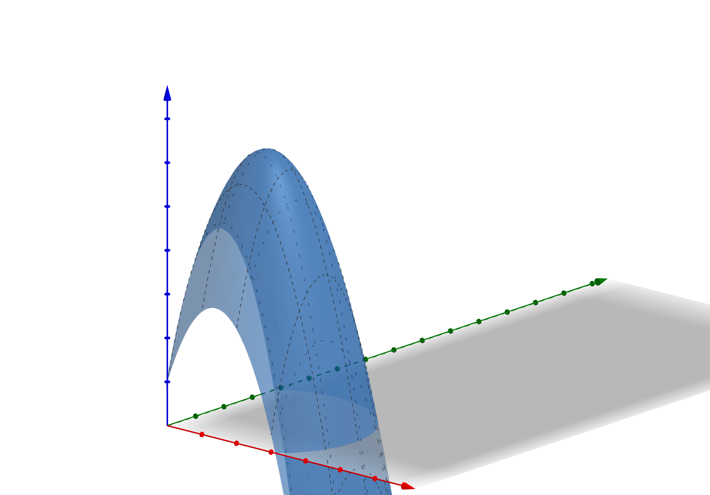

For those who don’t follow me on Twitter, I wrote a thread about Dr. J. Ernest Wilkins Jr. a Black mathematician who one of my professors took the time to tell me about one day after class. I wrote about how it made me feel as if I was being recognized for doing mathematics well for one of the first time ever. It reminded me that someone like me could encounter beautiful mathematics, and in particular, it reminded me that people can inspire one another and set an example for those who come after. Because of this, I set a very ambitious goal for myself. I promised to write a set of notes dedicated to the calculus of variations in the memory of Dr. Wilkins Jr.
I’ve been working on this for a while and frankly struggling. Finding the time to write this set of notes has been difficult, I’ve mostly been working an outline and surveying introductory texts to figure out why the Calculus of Variations is (or isn’t) interesting to study. One thing that’s apparent in anything I saw, at least in anything I could understand, was the natural physical beauty motivating some of the theory as well the complexity of the field and delicate treatment that it demands. This is the main reason why getting a proper start has been particularly challenging for me. I wanted to be confident that I can give the material justice. What I forgot is that there’s a beauty in trying and failing. I forgot that no matter how hard it is at first to start this kind of project you can never know how enjoyable or rewarding it can become until you begin. I’ll try and let my hard work speak for itself in this. As a start to this, I’ll tell you how I became interested in this project and introduce some basic ideas of and provide some motivation for the calculus of variations.
Onto the Math
Let’s talk optimization. In calculus, you learn simple optimization problems using derivatives. You use these techniques to find rectangles with maximal area inscribed in an ellipses \[\left(\frac{x}{a}\right)^2 + \left(\frac{y}{b}\right)^2 = 1\] or to find out how to maximize the area of a pasture given some fixed amount of fencing.

Let’s try an example of our own.
Example
Disclaimer: I am not an economist by any means, but I figured I’d take a shot at something unfamiliar!!
You’re ordering shot glasses and are trying to figure out the best number to order to maximize profit. Let’s say you have 150 shot glasses to sell and want to sell them for at most 3 dollars per shot glass. If you know that you will have 50 loyal customers who will buy a shot glass regardless of price and that you will sell 5 more each time you decrease the price by 5 cents, how can you maximize your revenue? Using the fact that revenue is price times the quantity sold, we can write our revenue \(R\) as:
\[ \begin{equation} R(n)= (3-0.05n)(50+5n)=150 + 12.5n - 0.25n^2. \end{equation} \]
We can take the derivative of this and set it equal to 0 to find the optimal value of \(n\) which maximizes our profit.
\[\begin{equation} \frac{dR}{dt}= 12.5-0.5n=0 \end{equation}\]
In this case, we see that the optimal value of \(n\) is 25. That is, to maximize our revenue we must sell 75 shots glasses total. Because of this, we should set a minimum price of $1.75 to prevent losing out on profit from the price decreasing further!

This is the case where we’re only selling one object. What if we wanted to sell shot glasses and teddy bears? Then our revenue and pricing depends on two variables: the number of shot glasses and the number of teddy bears. Using multivariable calculus, we can solve this kind of problem! I will not do this example in full, but it’s something fun to figure out how to solve! Hint: Find the stationary values for shot glasses and teddy bears independently.

These examples all occur in finite dimensional spaces, but as we’ll see, moving to spaces with infinitely many dimensions forces to change our methodology a bit since our current methods depend on finding solutions to a finite number of equations.
The Calculus of variations
Switching our focus, instead of talking about values that we can pick to find a maximize or minimize a quantity, what if we wanted to find a function that maximizes or minimizes a quantity such as the flight path that minimizing fuel costs or the wave function which minimizes the energy of an election?
To begin discussing the calculus of variations, we’ll introduce its central objects with a pretty example with an ‘obvious’ solution, one that quickly becomes not so obvious when it comes to actually deriving its solution.
Function Spaces and Functionals
For example, let’s say we want to find the path that gives the minimum distance between the points \((a, \alpha)\) and \((b, \beta)\). Intuitively, we know the answer to this is a straight line, but to begin attacking this question, it makes sense to restrict the kinds of paths we can take to only those that are reasonable. In particular, we restrict our attention to the following set of functions:
\[\mathscr{F}=\{f\colon [a,b]\to \mathbb{R} \mid f(0)=\alpha, f(1)=\beta, \text{ and $f$ is differentiable}\}.\]
In order to find the curve which minimizes the distance between two points, it’s then our goal to find the function(s) with the minimum arc length. We can represent the arc length \(s\) from \(a\) to \(b\) as \[s=\int_{a}^{b}ds,\] where \(ds\) represents an infinitesimal arc length. Motivated by the Pythagorean theorem, we can draw a triangle with sides \(dx\) and \(dy\) and hypotenuse \(ds\). We write this as \(ds^2=dx^2+dy^2\). Using that \(y\) is a function of \(x\), we can rewrite this as:
\[ds=\sqrt{dx^2+dy^2}=\sqrt{1+\left(\frac{dy}{dx}\right)^2}dx.\]
Therefore, given function \(y(x)\), we can write its arc length as:
\[ \begin{equation} s[y]=\int_{a}^{b}\sqrt{1+\left(\frac{dy}{dx}\right)^2}dx. \end{equation}\]
To approach this problem, we’ve shifted to finding functions that minimize functionals or functions of functions. That still doesn’t answer the question of how to find these optimal functions though.
Let’s consider a more general case. Suppose we have a space of functions \(\mathscr{F}\) consisting of “reasonable” candidate functions \(f\) defined on a space \(E\) and a functional
\[\begin{equation} I[f]=\int_E F(x,f, f')dx, \end{equation}\]
for some function \(F\) which depends on \(x\), the function \(f\), and its derivative \(f'\). We can try and find the derivative of this functional mimicking what we’ve learned in calculus and saw in our first example, but how can we compute the ‘derivative’ in this case.
The Euler-Lagrange Equation
One criterion is that any stationary point or extremal function \(f\) satisfies the following equation when the functional \(I[\cdot]\) of the form above:
\[\begin{equation} \frac{d}{dx}\left(\frac{\partial F}{\partial y'} \right)-\frac{\partial F}{\partial y}=0. \end{equation}\]
This is called the Euler-Lagrange equation. It’s useful for solving this kinds of optimization problems because it helps one identify local extrema i.e. candidates for maxima and minima, but the Euler-Lagrange equation is not sufficient to identify whether functions are maxima or minima or neither1.
It is however, extremely useful in the example we started above! Shifting our focus back to the arc length example. Taking partial derivatives, we see that \[ \frac{\partial F}{\partial y'}=\frac{y'}{\sqrt{1+y'^2}}. \] We can see the second term of the Euler-Lagrange must be zero since \(F(x,f,f')\) does not depend on the function \(y\) itself in this case. Simplifying, we see that
\[\frac{d}{dx}\left(\frac{y'}{\sqrt{1+y'^2}} \right)= 0\]
for any extremal function \(y\). Therefore, \(\frac{y'}{\sqrt{1+y'^2}}\) must be constant. Rearranging, we see that \(y'(x)\) itself must be some constant \(m\). Therefore, after integrating, we find that \[y(x)=mx+b \] for constants \(m\) and \(b\). Plugging in the boundary conditions from our function space \(\mathscr{F}\) gives us that our extremal function \(y\) is:
\[\begin{equation} y(x)=\left(\frac{\beta-\alpha}{b-a}\right)(x-a)+\alpha \end{equation}\]
which is precisely the straight line between \((a,\alpha)\) and \((b, \beta)\). In this case, the function we derive is the same we expect. We have not proved that this \(y\) is the minimizing function, but that it is the only extremal value for the functional. Classifying this extremal functions is a bit more complicated and I’ll discuss this another time! Intuitively, it would make since that this function is minimizing, so we’ll just accept this for now.
If you need a bit of convincing, you can play with the desmos calculator below! It shows that the straight line gives the minimum arc length when compared to the the family of paths between \((a, \alpha)\) and \((b, \beta)\) described by
\[\begin{equation} f_\epsilon(x)=\left(\frac{\beta-\alpha}{b-a}\right)(x-a)+\alpha + \underbrace{\epsilon (x-a)(b-x)}_{\eta_\epsilon(x)}. \end{equation}\]
That is, we consider a family of deviations \(\eta_\epsilon\) from the straight line \(y\).
The interesting thing about the calculus of variations is how natural it feels. People are always concerned with the best way to achieve things and most of the time it doesn’t boil down to picking a couple of numbers to solve a single problem, but can depend on the entire form or process or set of possible ways we and nature2 rely on in our attempts to ‘optimize’ the world around us. May that be as simple as proving a straight line is the shortest path between points or as complicated as describing the best fuel distribution to find a reactor of minimal critical mass.
That’s all I have to say for now! This is a start to a whole new project of mine (I’m pretending it’s my undergrad thesis since you can’t write one for the math major @ UChicago). It’s a truly beautiful subject matter I’ll be diving into and I’m looking forward to writing more about it!
Thanks for taking the time to read! I’m always open to suggestions about what to write about, so please contact me if you’ve any ideas.
Until next time,
– Math, Magic, & Other Poems.
Marlin F.